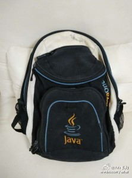

我在 @知乎 回答了【2014年成立注册资金1千万公司，0出资，10年交齐 现在别人用办公室入股；和现金入股。该如何分配股份？】：对此没什么经验，只是同作为创业者，谈谈我遇到类似问题得处理。 1. 房租等同于借钱。借钱以后还就可以了，作为感谢朋友的帮忙，还房租要… 网页链接
//@黄勇刚:创业期的有限责任公司，债务是毫无保障的。 不能拿这个忽悠人。 如果创业者以个人名义承担无限责任，借债还有情可原。 否则，应该全部折算成现金入股，非现金出资的包括： 1、房产、设备、设施的使用权。 2、工作人员的报酬差额：考虑加班、跨职能工作强度......按市场价格定薪@Ada李力:我在 @知乎 回答了【2014年成立注册资金1千万公司，0出资，10年交齐 现在别人用办公室入股；和现金入股。该如何分配股份？】：对此没什么经验，只是同作为创业者，谈谈我遇到类似问题得处理。 1. 房租等同于借钱。借钱以后还就可以了，作为感谢朋友的帮忙，还房租要… 网页链接
帮转：北京互联网技术免费讲座 时间：3月13日（周五）下午14：00 主题：运维安全与案例分享 主讲：陈天乐（上海富虎系统网络有限公司创始人） 手机：13801991681 地点：上地盈创动力大厦A座4层大会议室（13号线西二旗地铁站） 备注：不懂技术也能通俗易懂。会后晚上聚餐AA制
“通常我对物品不会很迷恋，更很少有感情。但是决定扔掉这个背包时，很多很多的事情会浮上脑海。我甚至觉得，扔掉它，也是对某段过去做告别的一个仪式。” from 背包的寿终正寝 - 李力(Ada Li)的博客 网页链接 